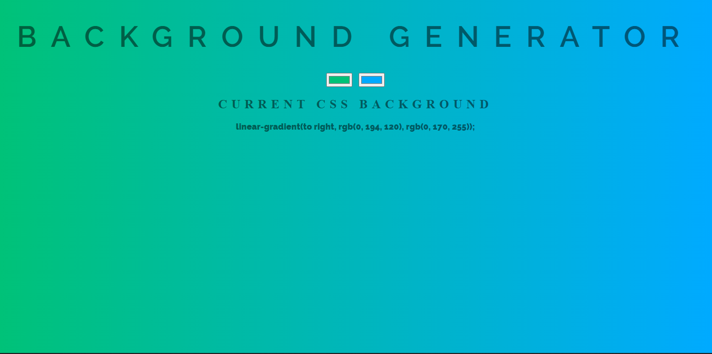
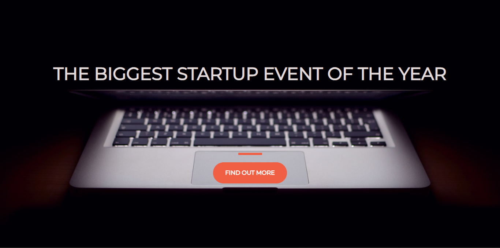
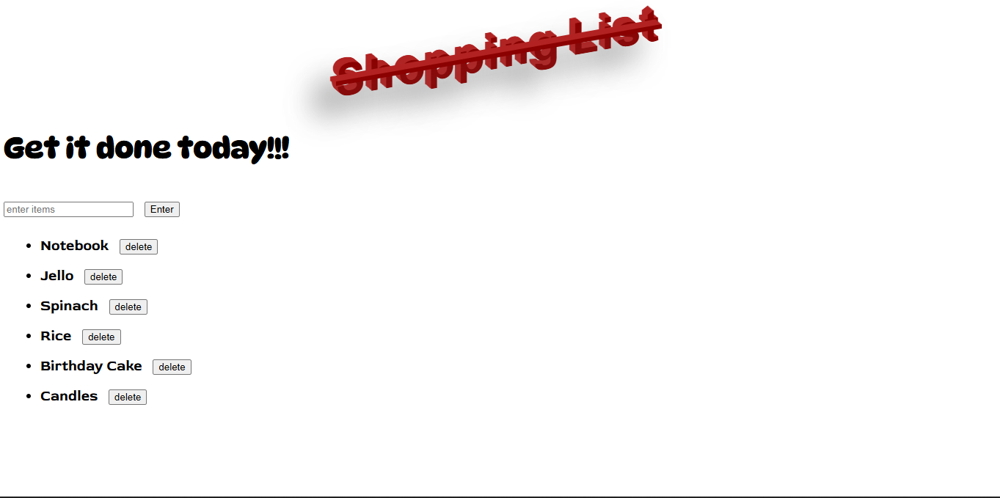
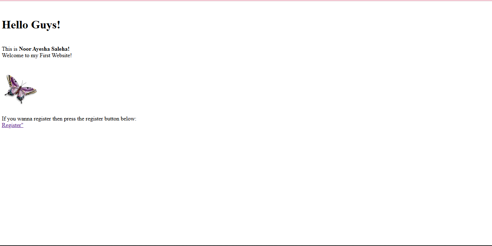
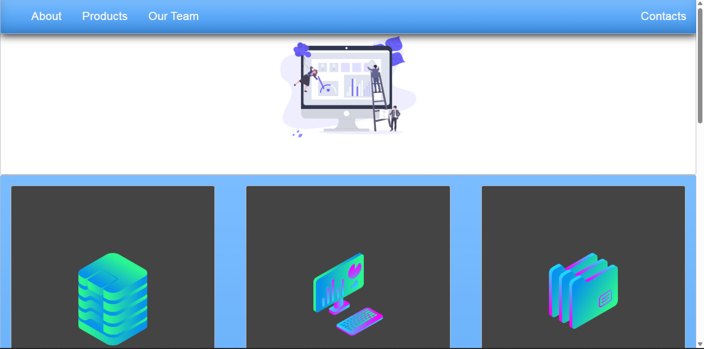
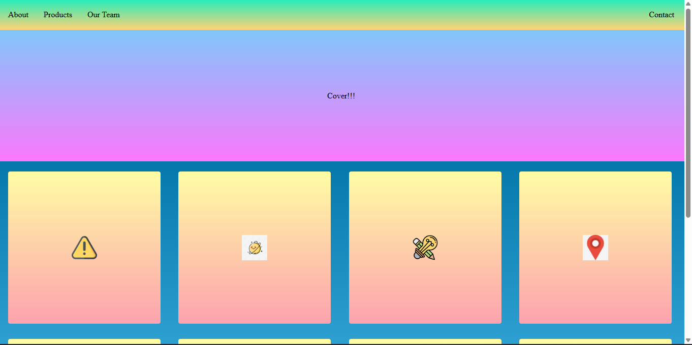
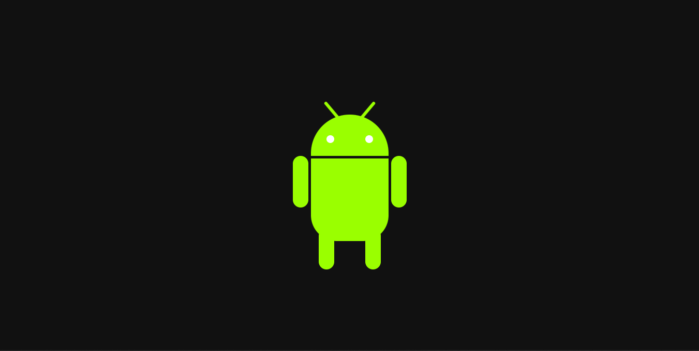
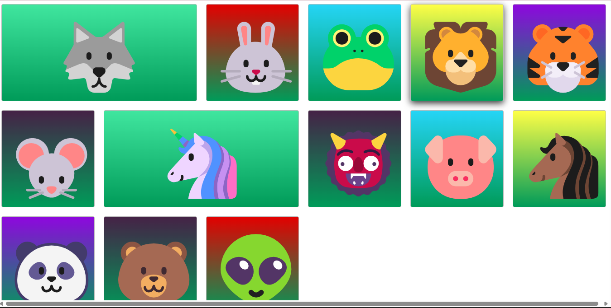
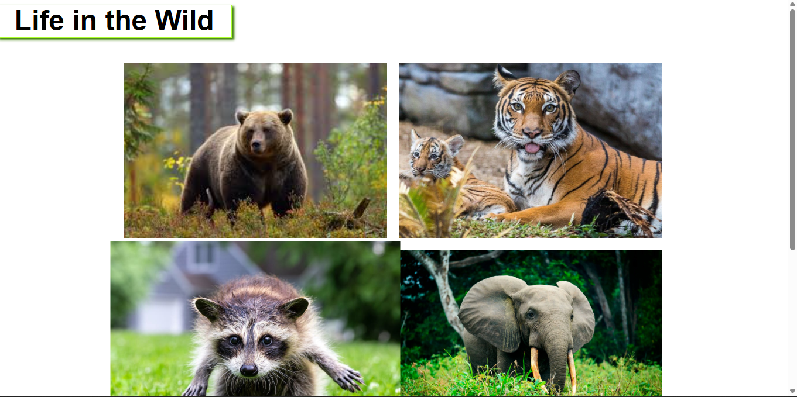

Gradient Generator
A simple and interactive webpage that demonstrates how gradient backgrounds work using CSS. This project focuses on experimenting with color combinations and learning how linear gradients can enhance modern web design while keeping the layout clean and minimal.
Key Concepts
-
CSS linear gradients
-
Background styling
Basic layout structure
Color experimentation

Uploading Website
This project was created to understand the process of publishing a website online using GitHub Pages. It helped me learn how to deploy static websites and make projects accessible on the internet.
Key Concepts
-
GitHub Pages deployment
-
Repository structure
Hosting static websites
Basic project publishing workflow

To-Do List
A simple shopping list webpage designed to practice structuring content using HTML lists and organizing elements clearly. The project focuses on writing clean HTML and understanding how lists help present information in an organized way.
Key Concepts
-
HTML lists (ul, li)
-
Page structure
Basic styling
Content organization

First Website
My very first webpage created while learning the basics of web development. This project helped me understand the core structure of HTML documents and how basic styling can improve readability and layout.
Key Concepts
-
HTML document structure
-
Headings and paragraphs
Basic CSS styling
Beginner web development concepts

Landing Page
A starter webpage created to practice setting up a new project structure and organizing files correctly. This project focuses on understanding how HTML and CSS work together when starting a new website.
Key Concepts
-
Project setup
-
File organization
HTML and CSS connection
Basic layout practice

Layout
This project focuses on building webpage layouts using CSS. It helped me understand how elements are positioned on a page and how modern layout techniques can create structured and responsive designs.
Key Concepts
-
CSS layout techniques
-
Flexbox basics
Page structure and alignment
Responsive layout thinking

Robot
A creative project where I built an Android robot illustration using only HTML and CSS. This helped me explore how simple shapes, positioning, and styling can be combined to create visual designs without images.
Key Concepts
-
CSS shapes
-
Positioning elements
Creative use of HTML and CSS
Visual design using code

Emojis Page
A fun webpage that displays emojis arranged in a grid layout. This project helped me practice building responsive grid layouts and organizing visual elements in a structured design.
Key Concepts
-
CSS Grid / layout structure
-
Responsive design
Visual content arrangement
Modern UI layout

Butterflies Page
A responsive webpage displaying beautiful butterfly images in a gallery layout. The project focuses on creating clean image layouts and experimenting with responsive design techniques
Key Concepts
-
Image galleries
-
Responsive layouts
CSS styling
Visual presentation

WildLife Page
A responsive webpage showcasing wildlife images. This project helped me practice creating organized image sections and designing layouts that adapt to different screen sizes.
Key Concepts
-
Responsive image layouts
-
CSS styling
Content presentation
Layout structure
